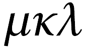

mkl? #ru senior citizen, mostly lurking. Likes mathematics. And photography. And cats.
blog
L'ennui du dimanche après midi
- November 9, 2015
Egmond aan Zee
- October 11, 2015
Moody Black and White
- February 10, 2015
alle
(
rss
)
links
my flickr
my github
my study